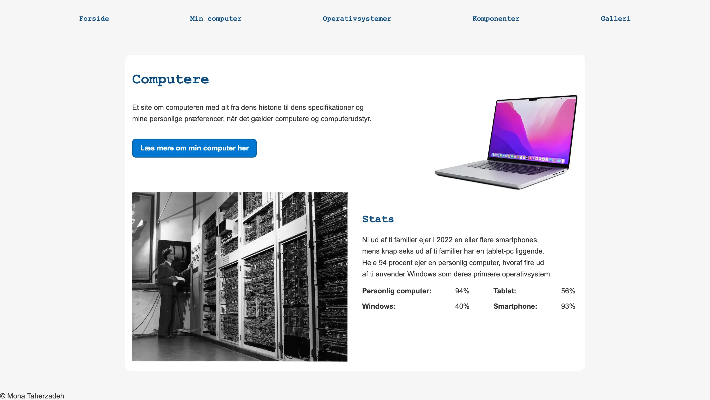

Grundlaeggende web
Tema 2 gav mig en grundlæggende introduktion til de værktøjer og metoder, som vi arbejdede med på 1. semester. Gennem temaets opgaver fik jeg mine første erfaringer med webudvikling, responsivt design og udvikling af brugergrænseflader. I undervisningen blev jeg introduceret til HTML, CSS, semantisk opbygning af hjemmesider, layoutdesign og grundlæggende designprincipper.
I dette tema arbejdede vi med to opgaver: et mobilesite og studiestartsprøven.
Min løsning
Mobilesite
I opgaven med mobilesitet lærte vi at bygge en hjemmeside fra bunden. Vi fik udleveret en wireframe, billeder og tekst, som dannede grundlag for hjemmesidens struktur og layout. Formålet med opgaven var at lære at kode en responsivt hjemmeside med fokus på mobile-first-princippet, så siden fungerede og så godt ud på mindre skærme.
Derudover arbejdede vi med de designprincipper, vi havde lært i undervisningen, og implementerede dem i vores CSS for at skabe et mere brugervenligt og visuelt sammenhængende design.
Studiestartsprøve
Studiestartsprøven byggede videre på mobilesitet, hvor opgaven var at tilpasse hjemmesiden til desktopvisning. Her arbejdede jeg videre med responsivt design og lærte, hvordan et layout kan tilpasses forskellige skærmstørrelser ved hjælp af CSS.

Besøg min studiestartsprøve her
Min læring
I tema 2 lærte jeg grundlæggende HTML og CSS og fik en forståelse for, hvordan kode og design går hånd i hånd. Jeg lærte at omsætte en wireframe til en færdig hjemmeside og oplevede, hvordan selv små ændringer i koden kunne påvirke både layout og brugeroplevelse. Gennem arbejdet med opgaverne blev jeg også introduceret til designprincipper, som hjalp mig med at skabe mere gennemtænkte og brugervenlige designs. Samtidig lærte jeg at arbejde mere systematisk med udviklingsprocessen, hvilket styrkede mine tekniske færdigheder og min forståelse af, hvordan hjemmesiden opbygges, tilpasses og optimeres. Tema 2 gav mig et solidt fundament inden for webudvikling, som jeg senere har bygget videre på gennem de efterfølgende temaer på uddannelsen.